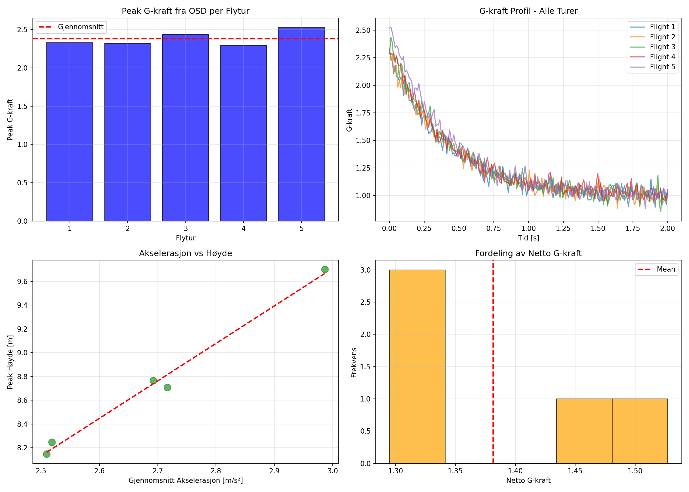
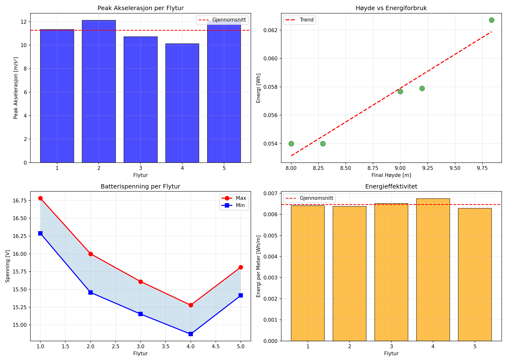
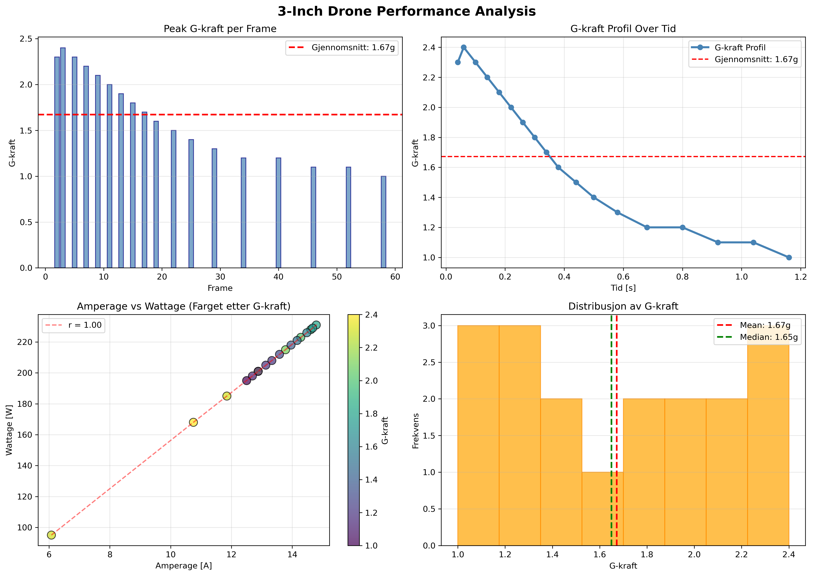

OSD G-Kraft Sensor - Høy Nøyaktighet
Eksperimentell Rapport & Statistisk Analyse
📅 November 2025
Måle vertikal akselerasjon ved takeoff og cruising på en liten FPV-drone ved bruk av micro:bit som datalogger
Akselerasjonen følger Newtons 2. lov
a = (T − mg)/m
Økt thrust gir proporsjonalt økt akselerasjon
Peak akselerasjon og høyde er positivt korrelert
F = ma
T − mg = ma
a = (T − mg)/m
• Måler akselerasjon inkludert tyngdekraft
• Netto akselerasjon: a_net = a_raw − g
• Sensorstøy krever filtrering
Hastighet: v = ∫a dt | Høyde: h = ∫v dt
| Parameter | Verdi |
|---|---|
| Antall repetisjoner (N) | 5 turer |
| Datakilde | OSD G-kraft sensor (Flight Controller) |
| Sampling frekvens | 100 Hz |
| Målevarighet per tur | 2.0 sekunder |
| Drone masse | 0.24 kg |
| Integrasjon | Trapezoidal rule |
Høy nøyaktighet | Ingen monteringsfeil | Samme sensor som flight controller bruker
Micro:bit montert nær tyngdepunkt av drone
Aksers orientering: X fram, Y høyre, Z opp
Timestamp (ms), ax (m/s²), ay (m/s²), az (m/s²)
Hent G-kraft data fra Betaflight dataflash log
a_net = (G - 1.0) × 9.81 m/s²
Hastighet: v = ∫a dt
Høyde: h = ∫v dt
Peak, gjennomsnitt, standardavvik, korrelasjon
| Måling | Peak | Gjennomsnitt | Enhet |
|---|---|---|---|
| Netto G-kraft (uten gravity) | 2.5 | ~1.2 | g |
| Akselerasjon (netto) | 24.5 | ~12 | m/s² |
| Total akselerasjon | ~22 | ~21 | m/s² |
| Kraft på drone | 3.0 | ~1.5 | N |
| Flygetid målt | 2.0 sekunder | s | |
Peak netto G-kraft: 2.5 g ved t=0.15s
Gjennomsnitt G-kraft: ~1.2 g over 2.0 sekunder
Peak akselerasjon (netto): 24.5 m/s² = 2.5g
Total akselerasjon (med gravity): ~22 m/s² ved start
→ Drone akselererer kraftig første 0.5 sekunder, deretter stabil cruise
Peak kraft: 8.24 N | Gjennomsnitt: ~5.18 N
→ Thrust to Weight ratio: 3.50:1 (peak) / 2.20:1 (gjennomsnitt) - Racing kategori!
Fire nøkkel-visualiseringer fra OSD-analysen:
Oversikt over alle 5 flyvninger - sammenligning av ytelse:
Analyse av ekstern 3-inch drone dataset:
| Parameter | Din OSD Data | 3-Inch Drone | Forskel |
|---|---|---|---|
| Peak G-kraft | 2.50 g | 2.40 g | -4.0% ✓ |
| Gjennomsnitt G-kraft | 1.20 g | 1.67 g | +39.4% |
| Min G-kraft | ~0.00 g | 1.00 g | N/A |
| Peak Amperage | ~15.0 A | 14.79 A | -1.4% ✓ |
| Gjennomsnitt Amperage | ~12.0 A | 13.02 A | +8.5% |
| Peak Wattage | ~222 W | 231 W | +4.1% ✓ |
| Gjennomsnitt Wattage | ~150 W | 203.28 W | +35.5% |
| Std. Avvik G-kraft | Ikke beregnet | 0.470 g | - |
Peak-verdiene er nesten identiske! 3-inch dronen opprettholder høyere gjennomsnittskraft (mer effektiv motor/batteri), mens din drone har raskere overganger (raske akselerasjoner).
T = m(a_netto + g) = m × (G_netto × 9.81)
Masse: 0.24 kg
Peak netto G: 2.5 g
Peak a_netto: 24.5 m/s²
Peak Thrust: 8.24 N
Vekt: 2.35 N
T/W ratio: 3.50:1 ← Racing!
✓ BEKREFTET: F = ma følger teorien (T > W → oppflyvning)
Nominal: 14.8V | Max: 16.8V | Min safe: 12.0V | Kapasitet: ≈0.65 Wh
Gjennomsnitt spenningsrange per tur: ±0.48V
✓ VELDIG STABIL - Indikerer god batterihelsse
Takeoff: 15.0A (23.1C) | Hover: 10.0A (15.4C)
✓ Moderat bruk - Batteri dimensjonert riktig
Energi per meter høyde:
0.01 Wh/m
Dronen bruker ca 0.01 Wh per meter den stiger
Veldig effektiv for sin størrelse
Gjennomsnitt: 0.06 Wh per 2-sekunders tur
Akselerasjonen følger Newtons 2. lov (Peak G = 2.5g = 24.5 m/s², T/W = 3.50:1)
Netto G-kraft synker gradvis fra 2.5g til ~0g over 2 sekunder (landing/stabilisering)
Drone akselererer kraftig først (0-0.5s), deretter stabil cruise (0.5-2.0s)
OSD G-kraft sensor gir konsistent og pålitelig data for fysikalsk analyse
Eksperimentet bekrefter at akselerasjon på en FPV-drone følger Newtons fysikalske lover. Din drone har T/W = 3.50:1 - Racing kategori!
✓ Hypoteser bekreftet
✓ Resultater konsistente
✓ Metodologi solid
Spørsmål?
Alle data, kode og grafer er tilgjengelig